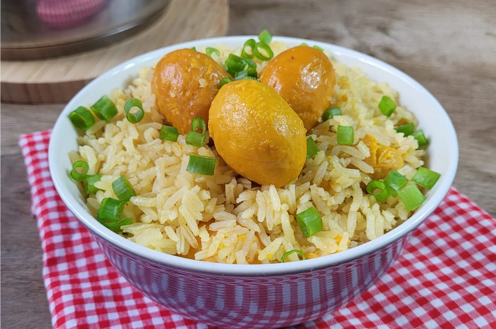
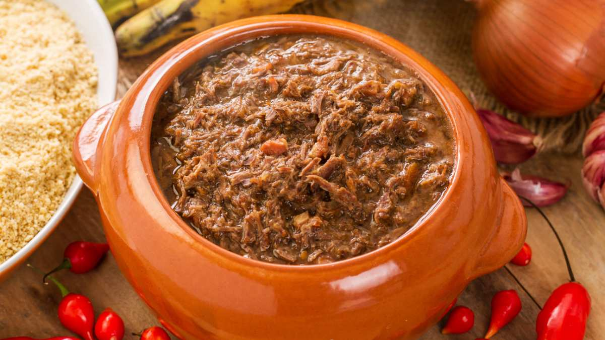

Mais famosas da semana
Escondidinho de Strogonoff
(345) Avaliações
Panquecas de banana
(578) Avaliações
Moça gelada
(465) Avaliações
Comidas tipicas de cada região do pais
| Norte | Nordeste | Centro-Oeste | Sudeste | Sul |
|---|---|---|---|---|

|
 |

|

|
 |
| Pato no Tucupi | Baião de dois | Arroz com pequi | Feijoada | Barreado |
| Peixada de tucunaré | Moqueca de peixe | Caldo de piranha | Feijão Tropeiro | Carneiro no buraco |
| Tacacá | Bobó de camarão | Mojica de pintado | Virado paulista | Pierogi |
| Bolo de macaxeira | Cuscuz | Pacu assado ou frito | Tutu de feijão | Borsch |
| Caruru | Mungunzá | Galinhada com pequi | Pão de queijo | Matambre recheado |
Receitas Fitness
- Strogonoff fit com batata-doce
- Quibe de abóbora
- Pão de queijo de inhame
- Espaguete de abobrinha
- Salada verde com frango
Comidas internacionais
- Japão
- お好み焼き(okonomiyaki)
- 焼きそば(yakisoba)
- とんかつ(tonkatsu)
- China
- 拉麵(Lamen)
- 饺子 (jiǎozǐ)
- 包子(baozi)
- Italia
- Carbonara
- Ravioli
- Gelato Biscotto
- França
- Madeleines
- Bouillabaisse
- Pistou
Comidas da Vovó
- Bolo de cenoura
- Bolo de fubá
- Bolinho de chuva
- Biscoito de maisena
- Carne de panela com batata